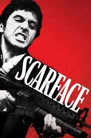

MOVIE GALLERY

AVATAR
PLOT: A paraplegic Marine dispatched to the moon Pandora on a unique mission becomes torn between following
his
orders and protecting the world he feels is his home. When his brother killed in a robbery,paraplegic Marine
Jake Sullydecides to take his place in the mission on the distant world of Pandora
Release Date: 18 December 2009
Director: James Cameron
Cast:Sam Worthington,Zoe Saldana
Langauage: English
IMDb=7.8/10

THE GODFATHER
PLOT: In 1945 New York City, Corleone crime family don Vito Corleone listens to requests during his daughter
Connie's wedding to Carlo. Michael, Vito's youngest son and a former Marine, introduces his girlfriend, Kay
Adams, to his family at the reception. Johnny Fontane, a popular singer and Vito's godson, seeks Vito's help
in securing a movie role.
Release Date: 24 March 1972
Director: francis Ford Coppola
Cast: Marlon Brando, Al Pancino
Langauage: English,Italian,Latin
IMDb=9.2/10

INCEPTION
PLOT:A thief who steals corporate secrets through the use of dream-sharing technology is given the inverse task of
planting an idea into the mind of a C.E.O., but his tragic past may doom the project and his team to
disaster and make it last chance to be with kids.
Release Date: 16 July, 2010
Director: Christopher Nolan
Cast: Leanardo DiCaprio,Ken Watanabe,Joseph Gordon Levitt,Tom Hardy
Langauage: English,French,Japanese
IMDb=8.8/10

SCARFACE
PLOT:Scarface is a 1983 American crime film directed by Brian De Palma and written by Oliver Stone.Loosely
based on the 1929 novel of the same name and serving as a loose remake of the 1932 film,it tells
the story of Cuban refugee Tony Montana who arrives penniless in Miami during the Mariel
boatlift and becomes a powerful and extremely homicidal drug lord.
Release Date: 1 December, 1983
Director: Brain De Palma
Cast: Michelle Pfeiffer,Steven Bauer,Al Pancino
Langauage: English,Spanish
IMDb=8.3/10
SUPERMAN
PLOT:The planet Krypton is destabilized from the mining of the planetary core. Just before the planet explodes,
Krypton's supreme council chief advisor Jor-El infuses the genetics codex into his infant son, Kal-El, the
first naturally born Kryptonian child in centuries. Jor-El manages to send Kal-El in a spacecraft toward
Earth before being killed by General Zod during an uprising.
Release Date:14 June ,2013
Director:Zack Synder
Cast:Henry Cavill, Amy Adams,Michael Shannon
Langauage: English
IMDb=7.1/10